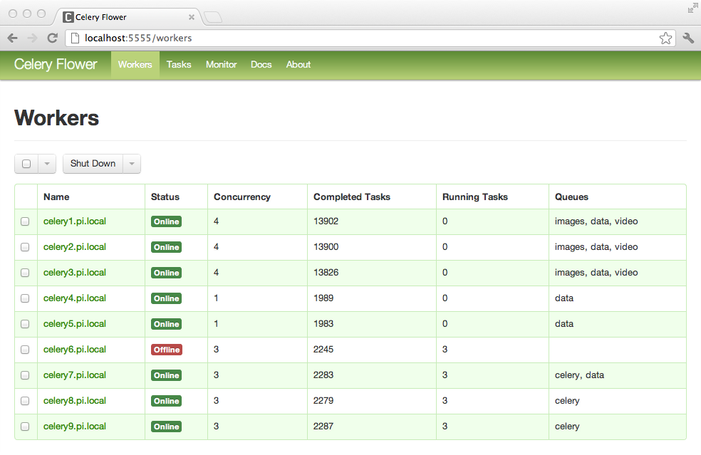
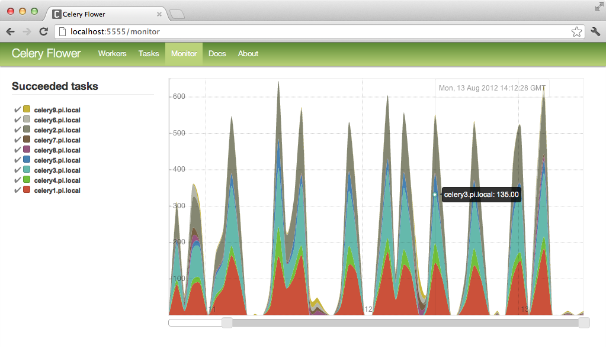

Celery gotchas
Co powinieneś wiedzieć o celerym zanim zaczniesz go obwiniać o wszystko co złe
Wykonywanie zadań lokalnie - synchroniczne
CELERY_ALWAYS_EAGER = True
Wiadomość nie zostanie dostarczona do brokera.
"Taski mi się nie wykonują", "Celery mi nie działa"
Twój worker konsumuje taski które zostały wysłane do bazy zadań. Jeżeli coś nie działa to:
Race condition
Twoje zadania domyślnie wykonają się w 4 wątkach.
celery worker -c 4 # default
Używaj kolejek
- Nie ma powodu aby jedno zadanie czekało na drugie skoro wykonuje zupełnie inną rzecz.Nie używaj bazy danych jako Brokera
Push z AMQP jest znacznie wydajniejszy niż pull z workera
SELECT FOR UPDATE tworzy locki = niska wydajność
Przykład: 4 kolejki * 4 procesy = 16 uderzeń do bazy na sekundę
Load balancing - celery beat
Powinien być tylko jeden proces beat!
Jeżeli chcemy tylko wysyłać eventy:
celery beat
Jeżeli chcemy wysyłać i konsumować:
celery worker -B
Nie przekazuj obiektów jako argumentów taska
W przypadku Django ORM zawsze przekazuj primary key i pobieraj obiekt z bazy
Monitoring
Flower - lista workerów
Flower - lista zadań
Flower - detale zadania
Flower - wykresy
Events
celery events
Sprawdzanie wiadomości w Rabbitmq
wozmin@wozmin-Ubuntu:~ $ sudo rabbitmqctl list_queues
[sudo] password for wozmin:
Listing queues ...
celery 0
...done
Workery rezerwują wiadomości w rabbitmq
wozmin@wozmin-Ubuntu:~ $ sudo rabbitmqctl messages list_queues messages_unacknowledged
[sudo] password for wozmin:
Listing queues ...
celery 0 0
...done
THE END
- http://docs.celeryproject.org/en/latest/
- https://github.com/mher/flower
- https://wiredcraft.com/blog/3-gotchas-for-celery/
- https://denibertovic.com/posts/celery-best-practices/